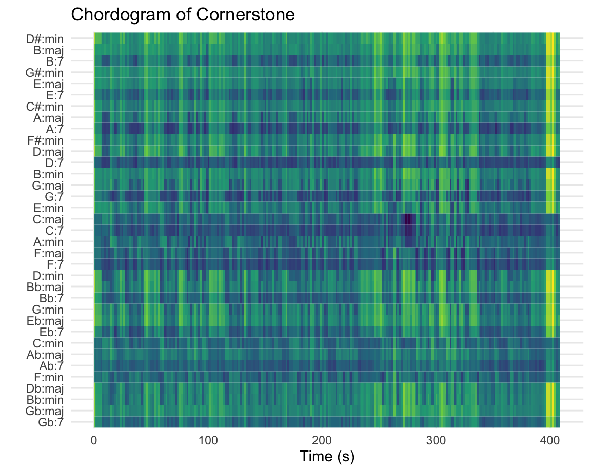
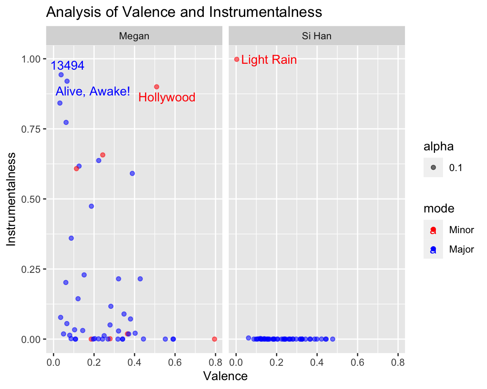

A divisive world? What clustering can teach us about music and more
Clustering
Here is an analysis of my top 50 songs. As shared earlier in the introduction, there are two general types of songs in my playlist, namely Christian Worship Music and Mandopop music. Hence, the intuitive expectation would be that these two would form the two main clusters.
However, it is interesting to observe firsthand that there is one song that is an extremely different from the rest, which is none other than the outlier track Light Rain, which is the song that I listen to sleep in the past and that comprises of basically rain sounds.
Aside from the outlier, we observe that the song forms two main clusters at the distance of approximately 13. And strangely enough, the clusters do not correspond to one for Mandopop and one for Christian Worship music. Instead, each of the clusters comprise of some of both genres (The R package is unable to render the Chinese characters, so the empty boxes are the Chinese characters that could not be renderred). This intriguing finding reflects two aspects. Firstly, due to the Spotify API not analysing lyrics, it does not pick up of language features and thus does not distinguish between English and songs in other languages.
However, what is even more interesting is the fact that this signifies that Christian Worship music and Mandopop do have significant similarities in styles and these similarities outweigh their differences such that they can be clustered together. This actually makes sense in the light that the instrumentation of many Mandopop songs and Worship songs involve keys, drums, vocals and at times strings as the core elements of the song. Take for example, the two songs embedded above, Holy Spirit, Living Breath of God and 说好不哭, which are instrumentally not too different in many areas.
This sheds light that a language agnostic algorithm can in fact bring music of different languages together and cogently display how music can unite us rather than divide us. We can listen to different languages with similar styles, and that we don’t always need to be confined to our own cultures, and that we can embrace something new. If we close our eyes to the language of the lyrics and open our eyes to what music can do to our hearts, we can possibly create a more inclusive world, one that many of our hearts yearn to see in a world that is currently going through turmoil, unrest and division.
A tale of two individuals: Can music define an individual?
An exploration into musical preferences
Someone once said music is the way to speak to the soul. Yet, what makes music so intriguing is how personal each individual’s choices are. Some may like rock music while others may prefer classical music. Is this just a personal preference, or does that indicate more than meets the eye about an individual’s personality? To find out, I will be comparing my girlfriend, Megan, and my top songs to examine what are some of the similarities and differences. As people with similar personalities yet different hobbies and interests, it will be intriguing to examine where our music choices converge and elements where they differ. Hence, the key research question that I will seek to address is to what extent does our musical preferences encapsulate the differences in our personalities and lifestyle.
Megan prefers more of lo-fi, indie music, especially those with chill vibes, while I often listen to emotional and worshipful music. Hence, it will be interesting to especially examine these features and explore how this reveals more about each of us individuals.
- Danceability
- Valence
- Speechiness
- Instrumentalness
Personally, both of us listen to our music primarily on Spotify. In fact, more than 90% of the music that we listen to is on Spotify itself. As a result, this would make the Spotify API and these playlists pretty accurate and representative of our musical tastes. Interestingly, Megan typically listens to music while doing work, while I listen to most of my music during leisure. Hence, this will also open the door to examining if the features of our music can reveal the different motivations for listening to music.
Songs that we listen to
Megan’s Songs
Typical Songs:
The typical songs found in Megan’s playlist are indie folk with slow vibes to the songs.
Atypical Songs:
We’re good is a song that is unlike the rest of the songs, with louder, faster and more beats to it.
Si Han’s Songs
Typical Songs:
Typical songs in the playlist would include Christian Worship songs and Mandopop songs, which comprise approximately 50% of the playlist each.
Atypical Songs:
Light rain is an ambient sound track of rain drops that are useful for falling asleep. This will be an interesting track to analyse due to the nature of the sounds and there being no distinct pitch of the sounds.Reflective music: A deep chordal dive into Cornerstone

Cornerstone is a classic Christian Worship song that reflects a very typical chord progression based around 4 chords. C major, A minor, F major and G major. It is very interesting to observe the chordogram as it can be observed that the song has 5 main sections. The first sections is up til 115 seconds and is marked by a dominant region in the middle of the y-axis signifying the main chord progression that runs through the song.
However, what is very interesting is the varying degrees of yellow in the rest of the chords for the duration of the song. The first section is marked by a quite a significant shade of yellow. This then fades from 115 to 230 seconds. This is because whilst both the first and second section includes the verse and chorus, the second region builds and incoporates more instruments, especially the electric guitar filler lines which are not in the chord progression, thereby diluting the intensity of the chords.
The song then falls to a solemn reflective mood, culminating at 270 to 280 seconds, where we hear most of the instrument fades out except the C major chord holding. This is reflected in the strong and distinct blue shade in this region, where the chord progression comes out stronger due to the other instrument fading. As the song builds again from 330 to 390 seconds, the yellowness fades again, similar to what we observe in the second region. The song then finally ends with the C major chord being held again, explaining the strong yellow regions for the other chords.
This song typifies a song that I personally like that is calming and reflective, and the variations of the intensity of the music is brought out in this chordogram by the intensity of yellow around the major chord progression. It typifies this style of emotional worship music that brings peace and that I enjoy and my reflective personality, something that my girlfriend tells me I embody.
Is there such a thing as work-from-home music: A dive into Carry You

Carry You is by one of Megan’s favourite artists Novo Amor and for good reason. This song Carry You displays dreamy vibes that builds into a hopeful crescendo towards the end of the song. The start is marked by a metallic ring which dies down, and may be reflected in the yellow fade from the first 20 seconds in the seventh dimension. Of note, this is followed with a flatness represented by the third dimension between 30s to 45s.
The song then builds up before fading, which is depicted in the 1st dimension which represents loudness. This wave like fluctuation between 50s to 140s creates an air of floatiness and creates the ideas of possibilities. This then builds to a sudden high pulsating volumes at 150s to 160s which uplifts the listeners and sends hopes the our hearts. This high volumes then sustains to build the positivity within the listen before a gentle slow and fade away.
This light yet uplifting song is perfect for a study or work session, typifying a song that would pair well with Megan’s typical routines at work. For a listener that is at the stage of working life, and especially work from home, Novo Amor’s Carry You brilliantly sings a encouraging tone to forge ahead with a day’s worth of work
Why a boring song exists: analysis of a strange outlier

The Rain Song is one of the interesting audio tracks in the list of songs for the reason that it is the only one without any melody or pitch. That being said, it is quite interesting to observe that the chromagram displays the sounds predominantly at the C pitch. This is likely to be less of an intentional feature, and more of a feature of the frequency of the rain drops corresponding to this pitch.
The Dynamic Time Warping and Self-Similarity Matrix also sheds insight into the fact that there are no significant dynamics in the audio track. Instead, it is fairly constant and monotonous, with the exception of the bright line at 140 seconds, which corresponds to a period with a bit more fluctuations in the intensity of rain.
This outlier song is a cool find within the haystack of music and one that is unusual not only to my playlist, but most Spotify songs. However, it brings out the fact that Spotify can be a space not only for listening to music, but even routines such as sounds to fall alseep to, as used in my case.
Positivity and soulfulness, can these be musically quantified?
Here, in the area of valence, we observe that the range of songs span across the whole spectrum to up to 0.8, while mine ranges up to 0.5. This is actually quite an accrurate reflection of our personalities, Megan being an upbeat and cheerful individual, while I am typically quite reflective when it comes to music, which helps to unravel my thoughts and feelings.
What is extremely insightful is also the range of the instrumentalness of the songs. Megan’s songs again span the whole spectrum, with one song being an outlier from the rest: Hollywood. The wide range of instrumentalness reflects how the songs she listens to contains some with vocals and others without. This diversity is something that can be contrasted with my songs, which are very low on instrumentalness. This is in line with the genres that I listen to: worship and Mandopop songs, which both typically have vocals accompanying the instrumentation.
One exception to this is the song Light Rain, which is a audio track of rain songs I listen to to fall asleep. Here, we can clearly tell the Spotify API was spot on to indicate a score of near 1.0 on instrumentalness, given that this track has absolutely no vocals inside. But as a whole, we see how the Spotify API has accurately characterising our different personalities, with Megan being more upbeat and me being more reflective.
What Black Bear can teach us: Does the music we listen reflect our personality?
Tempogram of Black Bear
Black Bear by Andrew Belle is one of Megan’s favourite songs, and one that is typical of her playlist. One phrase that encapsulates this song is chill vibes, and this is brought out through the tempogram. Off the top, it’s interesting to note that the tempo is approximately 140 bpm, which intuitively is pretty fast and wouldn’t be a very chill song. However, as we explore further into the song, we will examine why the musical elements bring out these chill vibes.
The song starts off with the singer and some simple keys in the background playing long drawn chords which creates a slow-paced atmosphere. After the first 14 seconds, the bass drum enters the scene, which is accompanied with an alternating clapping sound. Although the tempogram displays a tempo of 140 bpm, the alternating bass drum and clapping sound alternate hit at the frequency of every 2 beats, thereby effectively creating a tempo of 70 bpm. What is very interesting about the tempogram is the contrast we observe from the first 14 seconds to after the bass drum enters, whereby before we see a dilution of yellow across the y-axis, reflecting that there is not a clear tempo detected by the algorithm. In contrast, we observe a very distinct line after the bass drum and clapping sounds enter, reflecting how this creates a very clear rhythm for the rest of the musical elements to align.
The song progresses to the most intriguing part, where the vocals fade out and a electronic synthesizer or electric guitar enters the scene and the bass drum fades slightly, carrying a more melodic fill which create an air of dreaminess, corresponding to the region from 180 seconds to 235 seconds, where the tempogram becomes diluted again. The synthesizer subsequently fades out, and the bass drums dominance is then reflected in the clear 140 bpm reflected for the rest of the song.
As a slow paced and calm individual, this song encapsulates Megan’s pleasant and gentle demeanor, one that also reflects her as a thoughtful individual. It hit me when writing this how much our musical choices can be reflective of who we are as individuals, and our personalities. Is there a causation in the sense that our personality determines the type of music we listen to? Or perhaps could the music we listen to shape the people we become? This answer to this question is for sure not straightforward, and we may never truly know, but my bet is that it may be a two way relationship. Our personalities are likely to influence what type of music we are drawn to, but more interestingly, the music that we listen to influences the person we become.
Conclusion: What we can learn about the tale of these two individuals?
Boxplot of Loudness